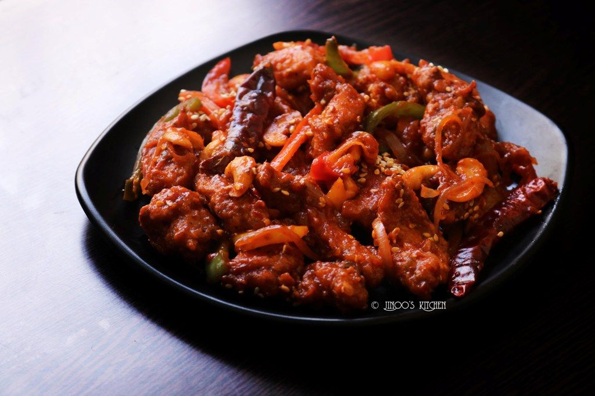

WELCOME TO ODIN RECIPES
DRAGON CHICKEN

DESCRIPTION
Dragon Chicken is a spicy, addictive Indo Chinese appetizer that takes under 30 minutes to put together! Crunchy cashews, fried strips of chicken, lots of onion and capsicum tossed in a spicy red chilli sauce make this a crowd favourite!
COURSE: APPETIZER
CUISINE: CHINESE
COOK TIME: 30 mins
SERVES: 4
INGREDIENTS
Marinade
- 450 Grams Chicken Thigh boneless, cut into 1/2 inch thickness strips
- 1 Teaspoon Soy Sauce
- 3/4 Teaspoon Salt
- 1/2 Teaspoon Pepper
- 1 Teaspoon Kashmiri Red Chilli Powder or cayenne
- 1 1/2 ablespoons Rice Flour
- 1 1/2 Tablespoons All Purpose Flour maida
- 1 Egg White
Stir-Fry
- 1 1/2 Tablespoons finely chopped Garlic
- 1 1/2 Tablespoons finely chopped Garlic
- 1 Tablespoon Red Chilli Paste can reduce to 2 teaspoon if you want less spicy
- 1 medium Onion cut into chunks
- 1 medium Green Capsicum cut into chunks
- 1/4 Cup Cashew Nuts
- 1 Teaspoon Soy Sauce
- 1 Teaspoon Vinegar
- 1 Tablespoon Ketchup
- 1/2 Teaspoon Salt
- 1/2 Teaspoon Pepper freshly ground
- 1 Teaspoon Corn Flour
- 1/4 Cup Water
INSTRUCTIONS
Marinade
- Add all the marinade ingredients into a mixing bowl. Use a pair of tongs or spoons to mix well. Ensure there are no lumps of flour. Set aside.
- Heat oil in a frying pan, kadai or wok. Heat enough oil for shallow frying the chicken pieces. Once hot, carefully add the marinated chicken pieces into the oil one at a time. Allow to fry on medium high heat for 2-3 minutes or until golden brown.
Stir-Fry
- Heat oil in a wok on high heat. Once hot, add garlic, ginger and red chilli paste. Fry on high heat for 1-2 minutes or until fragrant.
- Add onion and bell pepper and saute on high heat for 2-3 minutes. Add cashew nuts and fry for 1-2 minutes.
- Add soy sauce, vinegar, ketchup, salt and black pepper. Combine corn flour and 1/4 cup water in a small bowl and add it to the wok. Cook for 1-2 minutes or until the sauce thickens. Add fried chicken pieces and toss to combine. Serve hot!
Back to top